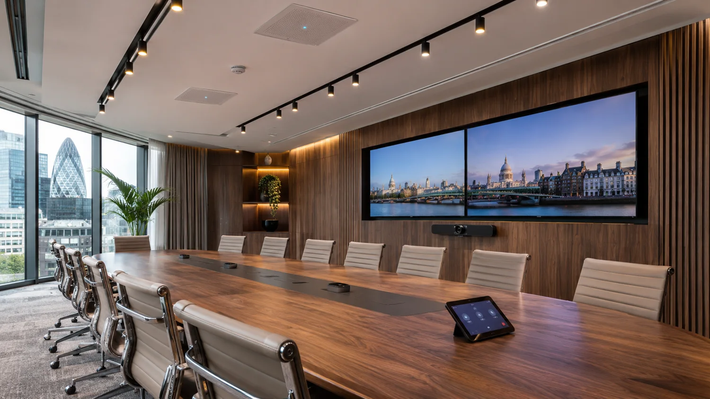

Home / AV & Workplace Technology
Audiovisual / integrated technology
Technology that belongs in the room.
Plan conferencing, displays, sound, controls and connectivity alongside architecture to support intuitive meeting spaces.
Discuss workplace AV

Illustrative technology reference — not a BAMBU project AV / TECHNICAL COORDINATION
Technology that disappears into the architecture. Hover or select a stage to explore the decisions, coordination and deliverables.
01 User experience 02 Infrastructure 03 Integration 04 Testing
01 / User experience
Define the experience Understand how rooms will be booked and used, and the technology standards the business needs.
What you get Room-by-room technology brief and user requirements.
Room use Define meeting sizes, hybrid calls, presentations, collaboration and accessibility needs.
Platform standards Agree preferred conferencing platforms, device policies, room booking and IT ownership.
User experience Review camera coverage, display visibility, microphone pickup and simple room controls. 02 / Infrastructure
Check the infrastructure Coordinate specialist input on connectivity, cabling, comms spaces, power and Wi-Fi.
What you get Infrastructure requirements and coordinated service interfaces.
Network readiness Coordinate bandwidth, Wi-Fi coverage, network segmentation and connectivity with the client’s IT team.
Power and containment Identify power outlets, data points, cable routes, comms racks and cooling requirements.
Building interfaces Review ceiling space, acoustic conditions, lighting and specialist installation constraints. 03 / Integration
Integrate the design Plan displays, microphones, speakers, controls and access systems around the room layouts.
What you get Coordinated equipment layout, interface schedule and specification for specialist review.
Equipment layout Position displays, cameras, microphones, speakers and touch controls around sightlines and seating.
Architectural integration Coordinate mounting, joinery, ventilation, acoustic treatments and accessible cable routes.
System coordination Agree interoperability, control sequences, security and responsibilities with specialist integrators. 04 / Testing
Test before handover Agree testing, user training and handover records with the relevant specialist teams.
What you get Testing records, user guidance and agreed support arrangements.
Functional testing Agree checks for calls, content sharing, audio coverage, camera views and room controls.
Integrated checks Verify relevant network, booking and control interfaces with the client’s IT and AV specialists.
User readiness Arrange training, quick-start guidance, support contacts and outstanding issue tracking. Relevant experience / prior role
Havas Media / King’s Cross 3,500 sq ft. Meeting-room reconfiguration, integrated AV and modifications to sprinklers, fire alarms and access control.
Prior-role experience; programme not confirmed.
Explore the project Start a conversation
Tell us what you're planning. A brief outline of the location, floor area and programme is enough to begin.
Get in touch PROJECT NOTE
Technology needs a coordinated home Meeting-room equipment affects acoustics, lighting, sightlines, cabling and ventilation. Bring the technology brief into the design while changes are still manageable.
AV / ILLUSTRATIVE SYSTEMS
Connected meeting spaces. Example system types, selected with appropriate specialists for the room and client IT standards.
Conferencing Displays, cameras, microphones and room acoustics.
Room booking Scheduling panels, network connectivity and user access.
Control Lighting, shading and AV controls coordinated with the technical design.
Get in touch ↗